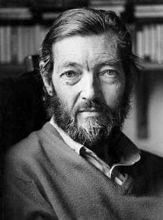

Biografía
Julio Cortázar nació en Bruselas el 26 de agosto de 1914. Cuando tenía cuatro años de edad se mudó con sus padres a Argentina, donde pasó su infancia, adolescencia y parte de su juventud. En 1951 se trasladó a París, donde comenzó a trabajar como traductor para la Unesco y realizó sus primeras publicaciones. De su obra puede rescatarse la increíble capacidad para mezclar fantasía con realidad y crear tramas estupendas y atrapantes. Si bien escribió principalmente relatos, también dejó algunas novelas y varios poemarios; era un autor absolutamente apasionado por las letras en general y supo destacarse en todo género que abordó.
El rasgo que mejor lo definía era la soledad, así lo expresó en más de una ocasión, considerando que sólo a través de la reclusión y la cercanía con uno mismo era posible escribir algo medianamente bueno. Sin duda fue uno de los autores consagrados del siglo pasado más irreemplazables. Dejó obras como "Bestiario", "Final del juego" e "Historias de Cronopios y de Famas" que lo han puesto en la lista de escritores más leídos de nuestro tiempo. En nuestra web podrás leer algunas de sus poesías, tales como "Una idea", "Nocturno" y "Poema a Dios, ese pajarito mandón".
Ambientación musical
libro: desconocido
"No volveremos a vagar"
Así es, no volveremos a vagar Tan tarde en la noche, Aunque el corazón siga amando Y la luna conserve el mismo brillo.
Pues la espada gasta su vaina, Y el alma desgasta el pecho, Y el corazón debe detenerse a respirar, Y aún el amor debe descansar.
Pues la espada gasta su vaina, Y el alma desgasta el pecho, Y el corazón debe detenerse a respirar, Y aún el amor debe descansar.
Te Amo por ceja...
Te amo por ceja, por cabello, te debato en corredores blanquísimos donde se juegan las fuentes de la luz,
te discuto a cada nombre, te arranco con delicadeza de cicatriz,
voy poniéndote en el pelo cenizas de relámpago y cintas que dormían en la lluvia.
No quiero que tengas una forma, que seas precisamente lo que viene detrás de tu mano,
porque el agua, considera el agua, y los leones cuando se disuelven en el azúcar de la fábula,
y los gestos, esa arquitectura de la nada, encendiendo sus lámparas a mitad del encuentro.
Todo mañana es la pizarra donde te invento y te dibujo,
pronto a borrarte, así no eres, ni tampoco con ese pelo lacio, esa sonrisa.
Busco tu suma, el borde de la copa donde el vino es también la luna y el espejo,
busco esa línea que hace temblar a un hombre en una galería de museo. Además te quiero, y hace tiempo y frío.